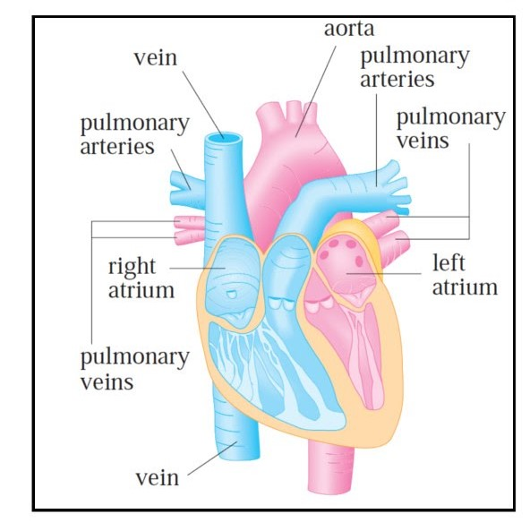

5.Cardiac Out Put
The figure below shows the human cardiovascular system.Blood returns from the body through the veins ,enters the right atrium of the heart,and is pumped to the lungs for oxygenation.It then flows back into the left atrium through pulmonary veins and then out of the rest of the body through the aorta.The Cardiac output of the heart is measured by the volume of blood pumped by the heart per unit time,i.e.,the rate of flow of blood into the aorta.

The dye dilution method is used to measure the cardiac out put.Dye is injected into the right atrium and flows through the heart into the aorta.A probe inserted into the aorta measures the concentration of dye leaving the heart at equally spaced times over a time interval [0,T] untill the dye has cleared.Let c(t) be the concentration of the dye at time t.If the interval [0,T] is divided into a large number of subintervals of equal length Δ t ,then the amount of dye that flows past the measuring point during the subinterval t=tt-i to t=ti is approximately concentration X volume=c (ti) X (FΔ t )
Where F is the rate of flow that we are trying to determine.
Thus the total amount of dye =∑i-1nc(ti) F Δ t
Making n → ∞ ,the amount of dye A is given by
A=F&sumi-1nctiΔ t =f ∫0Tc(t)dt
so that F=A/∫0Tc(t)dt
Thus the problem reduces to the evaluation of a definite integral.
As concrete example,if A=5,Δt =1,T=10
F=5/∫01c(t)dt=5/41.87,by numerical integration using Simpson's Rule
=0.12litre/second.